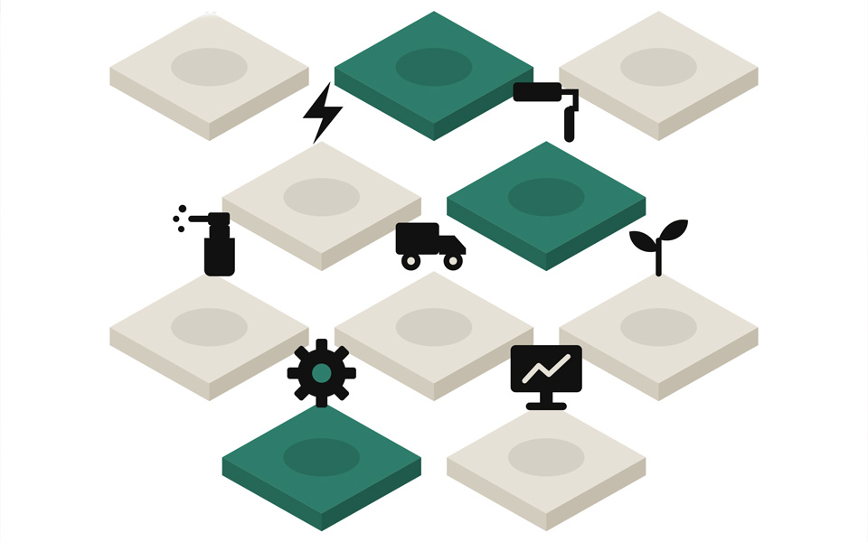
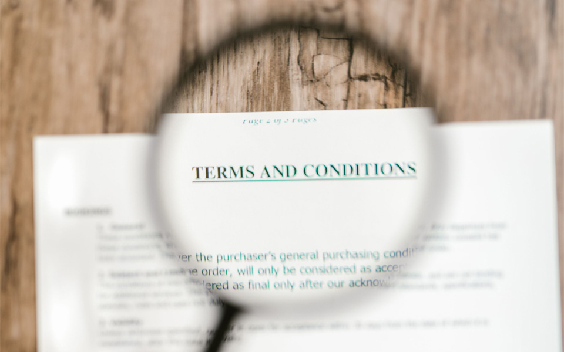
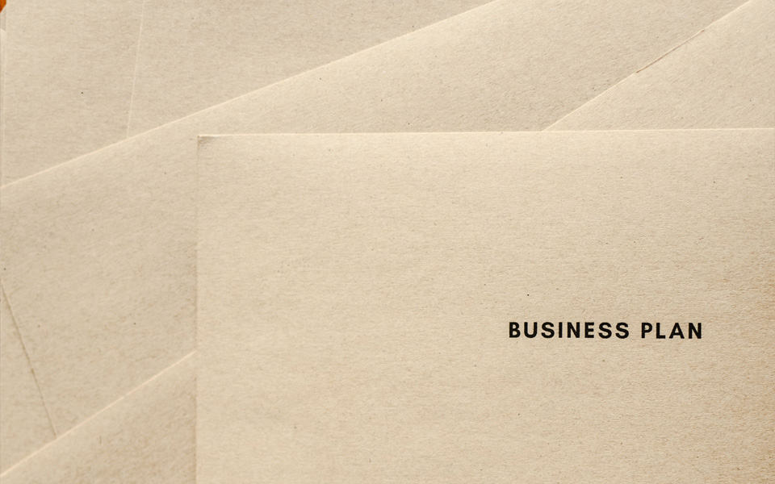

A verified marketplace for finding legitimate, trusted service providers — connecting organisations with qualified professionals across consulting, engineering, logistics, legal, IT, construction, and operational services.
Finding reliable, verified service providers is one of the most persistent challenges in international trade and project delivery. Organisations operating across borders need partners they can trust — from engineering firms and logistics companies to legal advisors and IT specialists — yet the process of identifying, vetting, and engaging these providers is often fragmented, opaque, and time-consuming.
IIC Worldwide operates a services marketplace that connects organisations with legitimate, verified service providers. Our platform addresses the trust gap by requiring every listed provider to undergo verification of credentials, track record, financial standing, and regulatory compliance before they can participate.
Whether a buyer needs a construction contractor in West Africa, a freight forwarder in the Gulf, or a compliance consultant in South-East Asia, our platform provides a structured environment where service procurement is transparent, competitive, and backed by verification.
Beyond matching buyers with providers, IIC offers procurement solutions and service finance that help organisations manage complex, multi-vendor engagements with the financial flexibility to structure payments around project milestones and deliverables.
IIC provides the infrastructure to find, verify, engage, and pay service providers — creating a marketplace where trust is built in and procurement is streamlined.

Service Provider Marketplace960 x 600 pxIIC maintains a curated directory of service providers across multiple disciplines and geographies. Organisations can search, compare, and engage providers based on capability, location, sector experience, and availability. Our marketplace is structured to support both one-off engagements and long-term retainer arrangements. Providers are categorised by service type, market coverage, and specialisation — making it straightforward for buyers to identify the right partner for their specific requirements without relying on personal networks or unverified referrals.

Verification & Trust960 x 600 pxEvery service provider on the IIC platform undergoes a structured verification process. We assess corporate registration, professional licences, insurance coverage, financial health, key personnel credentials, and past performance references. Providers that meet our standards receive verified status, giving buyers confidence that they are engaging with legitimate, capable organisations. Verification is not a one-time event — we conduct periodic reviews and monitor provider performance through client feedback, project completion data, and compliance tracking to maintain the integrity of the marketplace.

Procurement Solutions960 x 600 pxComplex projects often require multiple service providers working in coordination. IIC offers procurement management tools that help organisations issue requests for proposals, evaluate bids, negotiate terms, and manage contracts through a single platform. Our procurement solutions are designed for cross-border engagements where coordinating vendors across jurisdictions, currencies, and regulatory environments adds significant complexity. From tender management and bid evaluation to contract administration and performance tracking, we streamline the entire procurement lifecycle.
Payment terms and cash flow are critical factors in service engagements, particularly for smaller providers working on large projects. IIC offers financial solutions that bridge the gap between service delivery and payment — including milestone-based payment structures, escrow services, invoice financing, and performance bonds. These tools protect both buyers and providers: buyers gain assurance that funds are released only upon verified delivery, while providers gain access to working capital that enables them to take on larger engagements without cash-flow constraints.
Our marketplace covers a broad range of professional and operational services, each supported by verified providers ready to engage.
Management consultants, strategy advisors, financial analysts, and subject-matter experts available for project-based or retainer engagements across industries and markets.
Civil, mechanical, electrical, and process engineering firms providing design, supervision, inspection, and technical advisory services for infrastructure and industrial projects.
Freight forwarders, customs brokers, shipping agents, warehousing operators, and last-mile delivery providers supporting the physical movement of goods across borders.
Law firms, regulatory advisors, and compliance specialists offering corporate law, trade law, contract drafting, dispute resolution, and anti-money-laundering advisory services.
General contractors, subcontractors, project managers, and quantity surveyors for commercial, industrial, residential, and infrastructure construction projects.
Software developers, systems integrators, cybersecurity firms, cloud service providers, and digital transformation consultants supporting technology-driven business operations.
Facility management companies, industrial maintenance teams, equipment servicing firms, and operational support providers for ongoing asset management and upkeep.
Physical security providers, risk assessment consultants, due-diligence investigators, and crisis management specialists protecting assets, personnel, and operations.
IIC Worldwide is building a services marketplace where trust is the foundation. By verifying every provider, structuring procurement processes, and offering financial solutions that protect both parties, we remove the friction and risk that characterise traditional service procurement in international markets.
Our goal is a platform where any organisation — regardless of size or geography — can find, engage, and pay a qualified service provider with the confidence that comes from verified credentials, transparent terms, and institutional-grade oversight.
Connect with IIC Worldwide to access our services marketplace, find qualified providers, and streamline your procurement process.